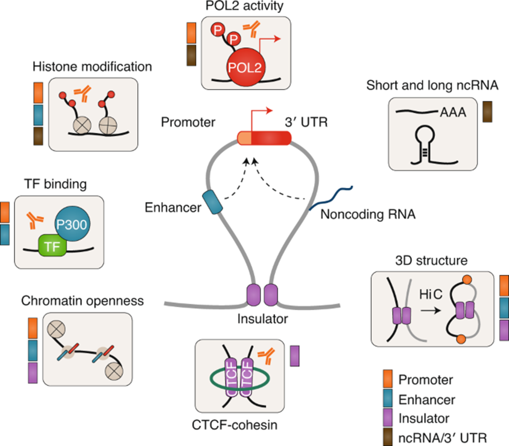
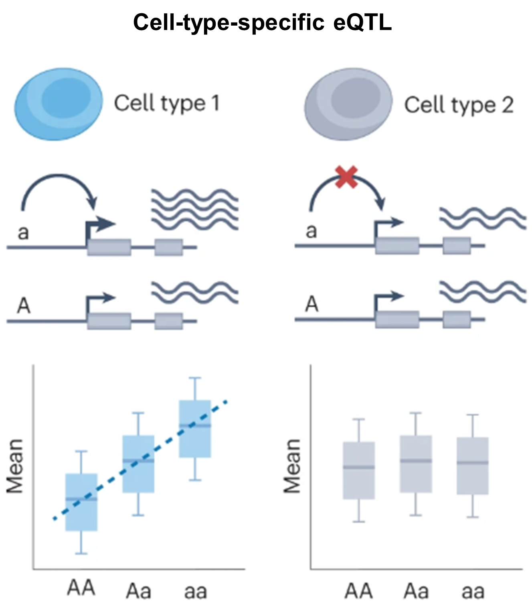

1. Regulatory variants are difficult to interpret¶
먼저 regulatory variant는 유전자 발현 조절 과정에 영향을 주는 변이를 의미합니다.
이런 변이의 상당수는 protein-coding exon이 아니라 non-coding 영역에 존재합니다.
문제는 이 non-coding DNA가 단순한 “빈 공간”이 아니라, 실제로는 유전자 발현을 조절하는 다양한 요소들로 이루어져 있다는 점입니다.

이 그림의 중심에는 하나의 유전자 조절 단위가 요약되어 있습니다. 가운데의 promoter는 실제 전사가 시작되는 위치이고, 옆의 enhancer는 떨어져 있는 위치에서도 promoter의 활성을 높일 수 있는 조절 요소입니다. 또 아래의 insulator는 모든 enhancer가 임의의 promoter를 조절하지 못하도록 경계를 만들어 주는 역할을 하며, 이 과정에는 CTCF–cohesin 같은 구조 단백질이 관여해 크로마틴의 접힘과 상호작용 범위를 제한합니다.
동시에 non-coding 영역에서는 여러 분자적 신호가 함께 작동합니다. 예를 들어 어떤 DNA 서열에 transcription factor가 결합하면, 그 자체로 끝나는 것이 아니라 주변의 chromatin accessibility를 바꾸고, histone modification 패턴을 변화시키며, 더 나아가 RNA polymerase II activity나 전사 개시 효율에도 영향을 줄 수 있습니다. 즉, 하나의 변이가 TF binding motif를 약화시키거나 새롭게 만들면, 그 효과는 단일 결합 자리의 변화에 머무르지 않고 chromatin state와 transcriptional output 전체로 확장될 수 있습니다.
또한 이 그림은 조절이 선형적인 DNA 상에서만 일어나는 것이 아니라 3차원 게놈 구조 안에서 일어난다는 점도 강조합니다. Enhancer와 promoter는 염기서열 상으로는 멀리 떨어져 있어도, 크로마틴이 loop를 형성하면 물리적으로 가까워질 수 있습니다.
따라서 어떤 변이는 enhancer 자체를 바꿀 수도 있고, CTCF/cohesin-mediated boundary를 교란해서 원래 만나지 않던 조절 요소들이 새롭게 접촉하게 만들 수도 있습니다.
여기에 더해, non-coding 영역은 단지 전사 시작만 조절하는 것이 아니라 short/long ncRNA, 3′ UTR processing, 그리고 mRNA 안정성처럼 전사 이후 단계와 연결된 조절에도 관여할 수 있습니다. 즉, 같은 non-coding variant라도 어떤 위치에 있느냐에 따라 전사 개시, enhancer 활성, chromatin opening, 구조적 상호작용, RNA processing 등 서로 다른 층위의 기능적 결과를 만들 수 있습니다.
정리하면, non-coding 영역의 regulatory variant는 단순히 “한 염기가 바뀌었다”는 수준이 아니라 TF binding, chromatin accessibility, histone marks, 3D genome architecture, RNA-related regulation이 서로 얽혀 있는 조절 네트워크를 교란할 수 있습니다.
그래서 non-coding variant의 기능을 해석하는 일은 여전히 어렵고, 이 복잡한 조절 층위를 함께 다룰 수 있는 모델이 필요하게 됩니다.
같은 variant라도 세포 유형에 따라 효과가 달라질 수 있다¶

다음 그림은 cell-type-specific eQTL의 개념을 단순화해서 보여줍니다.
여기서 eQTL (expression quantitative trait locus) 은 특정 유전변이가 유전자 발현량의 차이와 통계적으로 연관되는 경우를 의미합니다.
즉, 어떤 위치의 염기가 달라졌을 때 그 변이를 가진 사람들에서 특정 유전자의 발현량이 높아지거나 낮아지는 현상을 말합니다.
핵심: 특정 유전변이가 어떤 분자적 형질의 차이와 통계적으로 연관되는 것.
예1) eQTL: 유전자 발현량(expression level)의 차이와 연관된 변이
예2) sQTL: 유전자의 splicing pattern 차이와 연관된 변이
예3) caQTL: chromatin accessibility 차이와 연관된 변이
그림에서 대문자 A 와 소문자 a 는 같은 유전체 위치에 존재할 수 있는 두 대립유전자(allele)를 뜻합니다. 그리고 아래의 AA, Aa, aa 는 각각 두 개의 염색체에 어떤 allele 조합을 가지고 있는지를 나타내는 유전자형(genotype)입니다. 즉, AA는 A allele을 두 개 가진 경우, Aa는 서로 다른 allele을 하나씩 가진 경우, aa는 a allele을 두 개 가진 경우입니다.
왼쪽의 cell type 1에서는 a allele이 있는 경우 전사가 더 잘 일어나는 방향으로 작용하고 있습니다. 그 결과 아래 boxplot을 보면 AA → Aa → aa 로 갈수록 평균 발현량이 점진적으로 증가합니다. 즉, 이 세포에서는 해당 variant가 실제로 유전자 발현을 조절하는 기능적 효과를 갖고 있고, 그 효과가 allele dosage, 다시 말해 a allele의 개수에 비례해서 나타나는 것입니다.
반면 오른쪽의 cell type 2에서는 같은 위치의 변이가 있어도 발현량 차이가 거의 나타나지 않습니다. 위의 도식에서 붉은 X 표시는 이 세포에서는 해당 조절 작용이 일어나지 않음을 의미하고, 아래 boxplot 역시 AA, Aa, aa 세 유전자형 사이에 뚜렷한 차이가 보이지 않습니다. 즉, 같은 variant라도 어떤 세포에서는 기능적이지만, 다른 세포에서는 거의 중립적으로 보일 수 있다는 뜻입니다.
이런 차이가 발생하는 핵심 이유는 각 세포 유형이 서로 다른 regulatory landscape를 가지고 있기 때문입니다. 같은 DNA 서열을 공유하더라도, 세포마다 발현되는 transcription factor가 다르고, chromatin accessibility, histone modification, enhancer 사용 여부, 그리고 enhancer와 promoter가 실제로 접촉하는 3차원 구조도 서로 다를 수 있습니다.
예를 들어 어떤 variant가 특정 transcription factor의 결합 모티프를 강화한다고 가정해보겠습니다. 그 transcription factor가 cell type 1에서는 실제로 발현되고 있고, 또 그 주변 chromatin이 열려 있으며, 해당 enhancer가 target promoter와 접촉하고 있다면 그 변이는 실제 발현 변화를 일으킬 수 있습니다. 이 경우에는 a allele이 더 강한 결합을 만들고, 그 결과 aa genotype에서 발현이 가장 높게 나타날 수 있습니다.
하지만 cell type 2에서는 상황이 다를 수 있습니다. 같은 서열 변화가 있어도 그 transcription factor 자체가 그 세포에 존재하지 않거나, 주변 chromatin이 닫혀 있어 DNA에 접근할 수 없거나, 혹은 해당 enhancer가 그 세포에서는 아예 사용되지 않을 수 있습니다. 또는 구조적으로 promoter와 연결되지 않아 downstream transcription에 영향을 주지 못할 수도 있습니다. 이런 경우에는 서열상으로는 같은 variant라도 실제 발현 차이는 거의 나타나지 않게 됩니다.
즉, eQTL effect는 “변이 자체의 고정된 속성”이라기보다 특정 세포 환경 안에서 그 변이가 얼마나 실제 조절 회로에 연결되느냐 에 의해 결정된다고 볼 수 있습니다. 이 점 때문에 non-coding variant interpretation은 단순히 DNA 서열만 보는 것으로 충분하지 않고, 세포 유형별 chromatin state와 regulatory context를 함께 고려해야 하는 어려운 문제가 됩니다.
정리하면, 이 그림은 같은 유전변이라도 어떤 세포에서는 실제 eQTL로 작동하고, 다른 세포에서는 거의 아무 효과도 보이지 않을 수 있음을 보여줍니다. 즉, variant effect is context-dependent and cell-type-specific 하다는 점이 non-coding variant 해석의 핵심 어려움 중 하나입니다.
Regulatory variant는 다양한 조절 기전을 통해 작용하고, 그 효과도 세포 유형 특이적으로 나타날 수 있기 때문에
non-coding 영역의 variant interpretation은 여전히 중요한 해석상의 bottleneck으로 남아 있습니다.
Reference¶
[1] Zhang X, Meyerson M. Illuminating the noncoding genome in cancer. Nature Cancer. 2020;1(9):864-872.
[2] Cuomo ASE, Nathan A, Raychaudhuri S, MacArthur DG, Powell JE. Single-cell genomics meets human genetics. Nature Reviews Genetics. 2023;24(8):535-549.